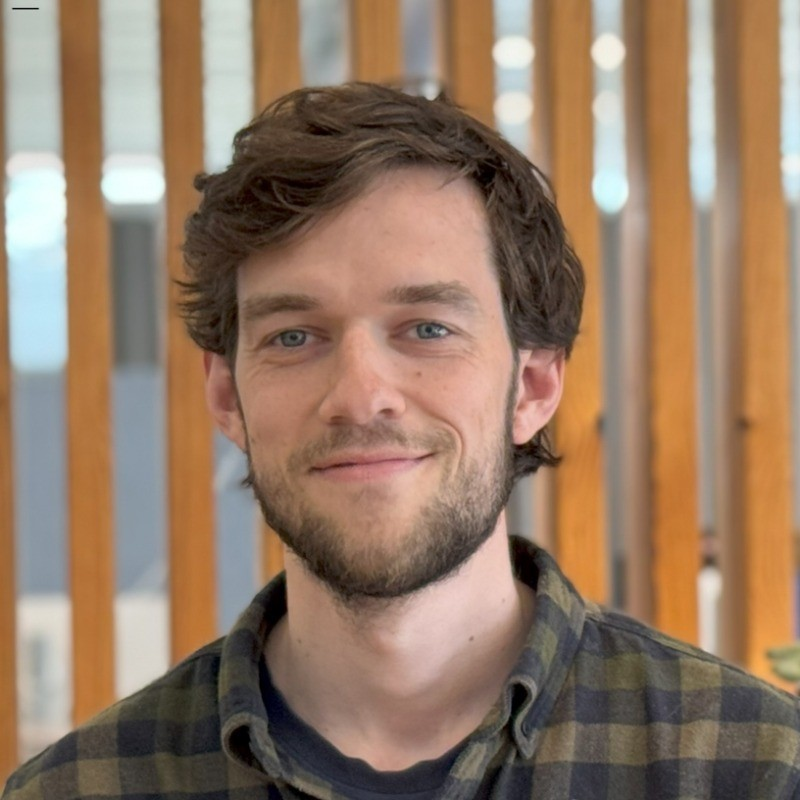

Lauritz Fokdal Koch
Jeg er en engageret datalog med erfaring i udvikling af robuste softwareløsninger, dataintegration og brugercentrerede systemer.

Faglig profil
Jeg er en engageret full-stack .NET-udvikler med erfaring i at bygge enterprise SaaS-løsninger. Mit fokus ligger på robust arkitektur, høj kodekvalitet og pragmatisk integration af AI-assisteret udvikling.
Jeg har dybdegående erfaring med agentic AI-udvikling, hvor jeg har brugt hele arbejdsuger uden manuel kodning ved at delegere til autonome AI-agenter (Devin, Windsurf, Copilot) – alt mens jeg bevarer fuld kontrol over kodekvalitet og arkitektoniske beslutninger. Jeg har sat GitHub-integration op for AI-agenter og orkestrerer multiple AI-værktøjer til forskellige udviklingsfaser.
Jeg trives i samarbejdsorienterede miljøer, hvor jeg kombinerer teknisk ekspertise med forretningsforståelse. Som detaljeorienteret udvikler er jeg altid på udkig efter nye teknologier og metoder til at forbedre arbejdsprocesser og skabe løsninger, der gør en forskel i praksis.
Erfaring
Softwareudvikler / AI Engineer , FirstAgenda A/S
Maj 2025 – i dag
- Full-stack udvikling på enterprise SaaS-platform med .NET og TypeScript.
- AI-driven udvikling: Leveragede agentic AI (Devin, Windsurf, Copilot) til feature-implementering, refaktorering og debugging. Brugte hele arbejdsuger uden manuel kodning mens jeg bevarer arkitektonisk kontrol. Satte GitHub-integration op for AI-agenter.
- Designede og implementerede mødelægningssystem med kompleks domænmodellering og placeholder-arkitektur.
- Refaktorerede autorisationslogik til centraliseret access-query komponent, eliminerede N+1-mønstre og etablerede single source of truth for adgangskontrol.
- Byggede reusable Web Components (XChooser, XTemplateChooser) med TypeScript, custom events og slot-baseret content projection.
Softwareudvikler, Lectio.dk (Macom A/S)
August 2023 – Maj 2025
Har arbejdet med bl.a.:
- Dataimport mellem studieadministrative systemer: Udviklede og implementerede en løsning til at importere og behandle data fra et eksternt studieadministrativt system til vores system.
- Optimering af hjemmeside til mobil: Tilpassede virksomhedens eksisterende hjemmeside til mobile enheder for at forbedre brugeroplevelsen.
- Mobile-specifikke løsninger: Udviklede mobil-specifikke løsninger, herunder autologin og autentificering fra desktop til mobil enhed vha. QR-koder og brug af mobilkamera til nem billedupload.
Testudvikler – Studentermedarbejder, PDC A/S
September 2021 – juni 2022
- Assisterede i udvikling og vedligeholdelse af automatiserede testscripts (herunder browser- og unit tests)
Helpdesk – Studentermedarbejder, Knowledge Cube A/S
Januar 2021 – september 2021
- Ydede FirstLine support til brugere via telefon og e-mail.
- Analysere og løste små softwarerelaterede problemer.
Uddannelse
Københavns Universitet
Bachelor i datalogi
September 2018 – januar 2023
- Softwareudvikling, interaktionsdesign og AI.
- Studieretning i datascience, herunder machine learning og big-data behandling.
- Bachelorprojekt i videnskabsteori: “Kan AI være bevidst?”
Frivillig
Coding Pirates
Programmering for børn
August 2020 – januar 2021
- Underviste børn i at programmere et simpelt bil-spil i Unity med C#.
Om mig
Lauritz Fokdal Koch, 30 – familiefar. Jeg prioriterer mine børn Johan (4 år) og Frida (1 år) og familielivet højt.
Jeg læser især om buddhisme og bruger mindfulness som ramme for at blive et mere empatisk og ordentligt menneske. Jeg ser det som en form for træning – ligesom andre dyrker styrketræning – hvor jeg styrker 'sindsro' og 'koncentration's musklerne.
Jeg har også vandret Camino de Santiago og gennemført en maraton-vandredag på 130 km. Jeg sætter pris på at teste min egen udholdenhed og evne til at præstere under pres. På kontoret kan du ofte finde mig med mit store sortiment af lækker the.
Faglige kompetencer
- AI-Assisted Development
- Agentic AI Workflows
- C# & .NET 10
- GitHub Integration for AI Development
- ASP.NET Core MVC
- Entity Framework Core
- Layered Architecture
- REST API Design
- SQL Server & Database Design
- TypeScript
- Custom Web Components
- SCSS/CSS
- Unit & Integration Testing
Værktøjer & Platforme
- Devin (Agentic software development)
- Windsurf AI Development & Github Copilot
- GitHub & Git
- SQL Server Management Studio
- Entity Framework Core
- Cypress E2E Testing
- Visual Studio, Jetbrains Rider, VS Code & Windsurf
Sproglige kompetencer
- Dansk
- Engelsk (flydende)
- Spansk (begynder)